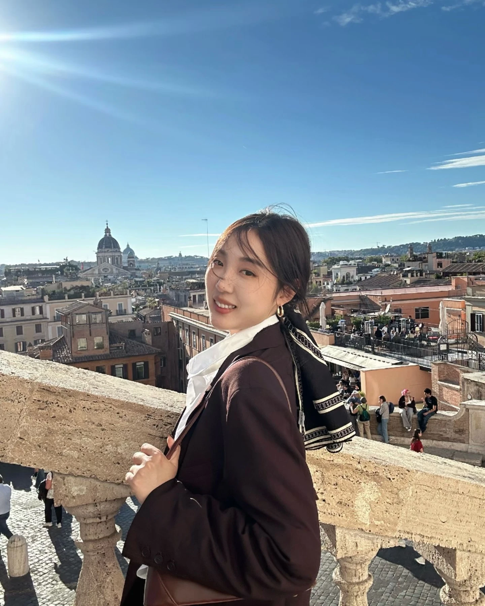
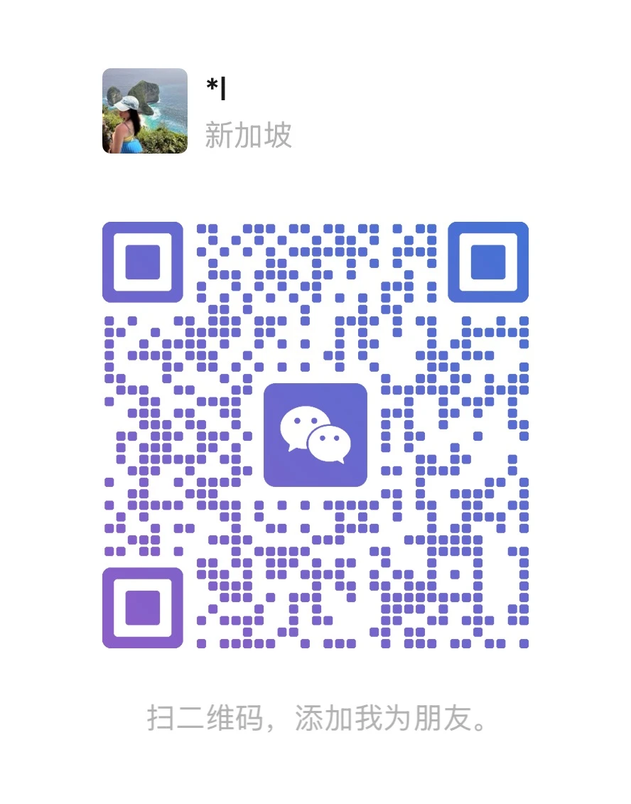

WeChat
Hi! I’m Yilan Li.
具备项目统筹能力的品牌视觉 / 品牌体验设计师，拥有 3 年互联网品牌视觉与整合营销设计经验。
长期服务得物品牌相关项目，覆盖品牌资产系统、S+ 级品牌活动视觉、包装礼盒、导视空间、AI 创意与 AI 设计流程建设等多类场景。
擅长从业务目标出发建立视觉系统，拆解交付模块，协同业务、供应商、交互、产品等多方角色，推动项目从视觉方案、规范沉淀、延展审核到跨团队落地。
A brand visual and experience designer with project coordination capability and 3 years of experience in internet brand systems and integrated marketing design.
Outside of design, I’m also working with generative AI everyday to create useful tools and practical design workflow experiments.
EXPERIENCE 
品牌视觉设计师
得物 Dewu / POIZON
Shanghai, China
项目统筹与视觉落地
品牌活动、资产系统、包装物料与 AI 设计流程
2023 - 2026
EDUCATION 
厦门大学
Xiamen University
项目结果 Selected Outcomes 
我的主场系列活动
统筹社区活动 IP、线上会场、线下小镇物料与传播触点的视觉统一，支持项目完成多场景落地。
品牌曝光 15 亿+，拉新 150 万人。
Unified the community IP, online venue, offline town and communication touchpoints. 1.5B+ exposure and 1.5M new users.
极光蓝公益行动
参与品牌视觉识别规范 3.0 建设，并将极光蓝应用至公益传播、社媒与线下场景。
官方社媒 + KOL 传播累计曝光约 175 万。
Extended Aurora Blue from brand guidelines into public-welfare, social and offline applications, reaching about 1.75M views.
送礼心智体系
覆盖全年 12 个重要节庆节点，并延展至商城购买、额外加购与搜索等交易场景。
12 festival touchpoints across commerce and add-on flows.
品牌重点物料升级
梳理包材、尺码标与关键物料的使用方式及物流流程，完成方案优化与规范落地。
帮助打包效率提升 15%。
Optimized packaging materials, size labels and logistics use cases, improving packing efficiency by 15%.
AI 设计流程建设
将 AI 引入创意发散、素材生成、品牌规范问答、物料审核、会议纪要与进度追踪。
每月节省约 300 个规范答复问题，支持约 75 场会议记录与追踪。
Built AI workflows for ideation, brand QA, material review and project tracking, streamlining 300 monthly requests and 75 meeting records.
能力方向 Capabilities 
品牌资产系统 Brand Asset System
品牌标识、品牌色、字体、IP 与包装防伪物料的规范建设
Guidelines for identity, color, type, IP and anti-counterfeit packaging
S+ 级品牌活动统筹 S+ Campaign Coordination
目标对齐、交付拆解、供应商沟通、物料审核与上线检查
Alignment, delivery planning, vendor coordination and launch QA
交易与送礼体验 Commerce & Gifting Experience
商城购买、额外加购与节庆礼盒/礼袋触点设计
Commerce, add-on purchase and festival gifting touchpoints
AI 创意与设计流程 AI Creative Workflow
创意发散、素材生成、品牌规范问答、物料审核与进度追踪
Ideation, asset generation, brand QA, material review and tracking
WORK